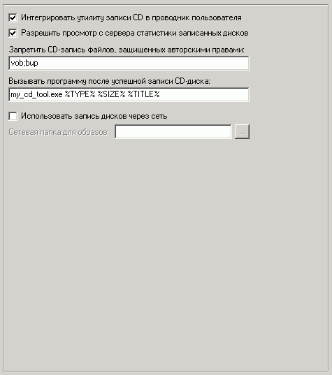

Наиболее важные опции на этой вкладке:
Вызывать программу после успешной записи CD-диска
Можно указать любую вашу программу, которая вызовется с параметрами после записи CD.
Параметры указываются между символами процента и могут отсутствовать:
TYPE - тип диска (0-CD,1-DVD)
SIZE - размер записанных данных в КБ
TITLE - заголовок диска
Использовать запись дисков через сеть
Если привод расположен только на машине администратора, то имеет смысл организовать запись дисков через сеть.
В этом случае данные будут записываться через утилиту записи дисков не физически на CD-диск, а ввиде файла-образа в сетевую папку, которую необходимо установить.
Само имя файла образа будет содержать имя машины, дату и время.
После успешного создания образа администратору будет отправлено сообщение на программу оператора и далее он сможет записать образ самостоятельно, используя утилиту шелла или любую другую.
На клиентских машинах достаточно установить Nero OEM